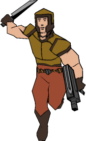

Cartoon Outline Generator | |||||
|
This utility adds extra polygons to a model to make it look like it has a cartoon outline. It currently only works on MilkShape 3D models exported in MilkShape 3D ASCII format. These models can be imported into MilkShape 3D and then exported as models for many popular 3D games. |  | ||||
|
1. With your model open in MilkShape 3D, click on the
File menu 2.. In the Export MilkShape 3D ASCII dialog, choose a name
and folder for your exported model and then click Save. This tutorial assumes that you have exported the model in the same folder as the cartoon outline generator, or that you are using the sample model in that folder. 3. Open an MS-DOS Prompt or Command Prompt. For example, in Windows 95 or Windows 98 you can usually do this by opening the Start menu, selecting Programs and then clicking on the MS-DOS Prompt option. (Windows NT and 2000 have the "Command Prompt" instead of the MS-DOS Prompt.)
4. If the current drive letter in the MS-DOS prompt is not the drive containing the exported model and the cartoon outline generator, type the letter of the drive where the model and the outline generator are found, followed by a colon, and press <Enter>.
6. Use the CD command to change to the directory (folder) where the cartoon outline generator and the model to be converted are.
7. Type "toon" (don't type the quotes), followed by a space and the name of the model you want to generate the outline for. Then press <Enter> to run the cartoon outline generator.
To see your outline in MilkShape 3D, import the generated model, (File menu, Import, MilkShape 3D ASCII...) right-click in the 3D view, and un-check the "Draw Backfaces" option Other Options - These other options are used by typing a hyphen (dash) and letter followed by a number value or word. A "[float]" is a number which can have a decimal part, and a "[string]" is just a word like a filename. -o [string] : output filename [string] is used for the name of the generated model. If you don't specify this option, the default filename (toon1.txt) will be used. -t [float] : thickness (default = 1) [float] is the thickness of the outline. The default is one unit. The length of one unit depends on the scale you build your model. (In the Quake scale for example, one unit is about 1/32 of a meter, or a little more than an inch.) Copyright © 2001 Seth Galbraith | |||||